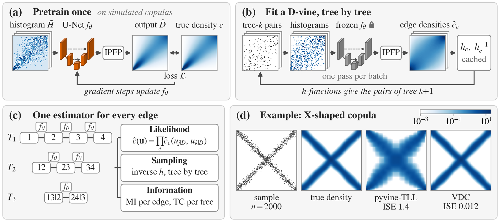
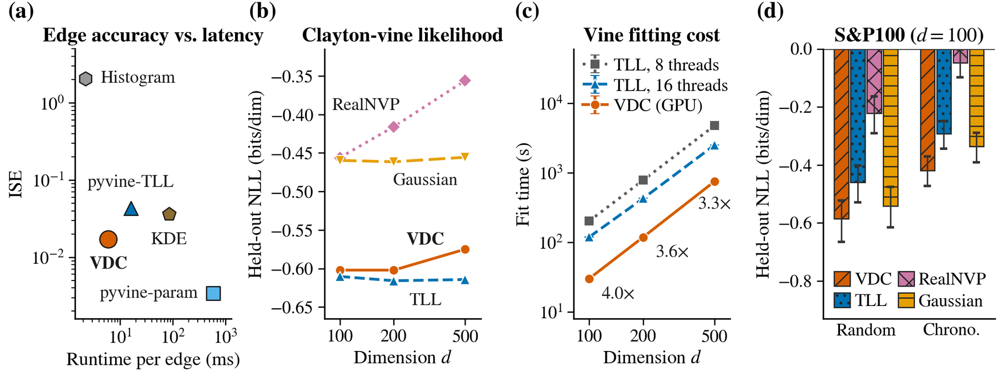

VDC · Python library · NeurIPS 2026
Vine Denoising Copula
One pretrained network estimates every pair-copula of a vine. VDC maps the empirical histogram of each edge to a copula density grid in a single forward pass, projects it to uniform marginals, and plugs it into standard vine recursion for likelihoods, sampling and information analysis.

Start here
- Install VDC and fit your first model
- Prepare data, fit a vine and evaluate held-out observations
- Look up the public Python API
Models and computation
- Pretrained models, verification and offline use
- Retrained estimators (VDC-64 and VDC-128)
- Compiled sampling and the NumPy fallback
- Optimized fitting
- Grid representation and numerical limits
Train and reproduce
- Configure a new training run
- Synthetic data generators
- Download and prepare datasets
- Reproduce the NeurIPS 2026 paper: runners, figure and table generators, saved results
Results at a glance
